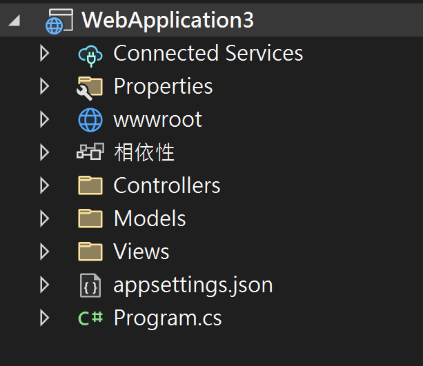

Recipe 1：MVC架構介紹
本單元將說明 MVC專案、控制器(Controllers)、檢視(Views)、模型(Models)
MVC專案
模型(Model)、檢視(View)、控制器(Controller)專案架構會將應用程式分成三個主要的元件群組：模型、檢視與控制器。這種架構有助於達成程式關注分離，設計者開發時，僅需專注於現在群組：檢視專注於使用者介面處理、控制器專注於輸入邏輯處理、模型則專注於商務資料邏輯處理。MVC架構可建立比傳統整合型應用程式更可測試且更易於更新的應用程式。MVC 架構的應用程式包含：
- 模型(Model)：代表應用程式資料的類別。模型類別使用驗證邏輯執行商務資料規則。通常模型物件會用於資料庫中擷取並儲存模型狀態。
- 檢視(View)：檢視包含顯示應用程式之使用者介面。 一般而言，他會用於顯示模型資料。
- 控制器(Controller)為程式類別用於處理瀏覽器要求、取出模型資料與呼叫回傳的檢視元件。

要開發MVC專案，首先我們必須了解專案中檔案夾資料夾的意義及目的：
- Connected Services：用於串接後端HTTP API服務。
- Properties檔案夾：裡面包含launchSettings.json檔用於描述專案如何啟動，其中包含網頁伺服器(IIS)設定、瀏覽器是否開啟及環境變數等。
- wwwroot檔案夾：用於儲存靜態資源如靜態網頁(.html)、CSS程式庫、JavaScript程式庫、字型、圖片、影片、聲音等，請注意：預設將靜態資源置於wwwroot檔案夾之外是無法被取得。
- Controllers、Models、Views檔案夾：用於儲存專案中控制器、模型與檢視，請注意：每新增一個控制器，專案會自動在檢視中新增對應控制器名稱的檢視資料夾。
- appsettings.json檔：用於儲存專案相關的設定如資料庫連接字串等。
- Program.cs檔：為專案起始類別，一般不會更動，下列程式碼設定預設頁面路由名稱及方式。
控制器(Controllers)
控制器目的是處理使用者互動、使用模型，並在最終選取要呈現之檢視。控制器為C#類別，包含許多方法，這些方法稱為動作(Action)。新增控制器，請點選方案總管中Controllers後，選滑鼠右鍵，並選擇 加入-控制器-MVC控制器-空白，控制器名稱第一個字要大寫，系統會自動在控制器名稱加上Controller。每個控制器可包含許多動作，動作用於執行專案中的特定操作，控制器預設動作名稱為Index，使用者可輸入 http://網站位址/控制器/動作 來執行控制器中的特定動作。動作宣告為public，並設定傳回值與動作名稱及代入值(如果有)，動作名稱第一個字為大寫。動作傳回值可以是特定類型、IActionResult(包含多種回類型如HTTP狀態、ViewResult、JSON、檢視、轉址等)或ActionResult<傳回類型>，動作中 return View() 用於傳回該動作對應檢視畫面。return View()除了呼叫預設檢視頁面之外，還可使用 return View("其他檢視名稱")、return View("其他檢視名稱",傳送參數物件)。 如果動作包含代入值，使用者可輸入 http://網站位址/控制器/動作/值1/值2 或 http://網站位址/控制器/動作?變數1=值1&變數2=值2 來呼叫動作。
檢視(Views)
檢視用於顯示資訊或提供與使用者互動的介面，檢視會儲存於專案 Views 資料夾，通常檢視會依照控制器來區分，不同控制器的檢視，儲存於不同資料夾中，每個控制器的動作可以有其對應檢視頁面，檢視頁面的副檔名為 .cshtml，內容包含前端網頁設定及ASP.NET特定後端(Razor)或前端(Blazor)控制語言，不同於JavaScript，ASP.NET特定後端(Razor)或前端(Blazor)控制語言使用C#語法。新增動作對應的檢視頁面，請點選動作名稱，按下滑鼠右鍵選擇 新增檢視-Razor檢視 並使用預設設定。請注意在檢視頁面需使用 @ 符號才能執行C#命令，如需放置多行C#命令時，請將命令至於 @{ }中。
模型(Models)
模型為C#類別用於表示與處理專案所需資料，模型會儲存於專案 Models 資料夾，要新增模型請點選 Models 資料夾，按下滑鼠右鍵選擇 加入-新增項目-類別 並設定類別名稱，請注意類別名稱第一個字大寫。類別屬性宣告為 public，並加入資料類別與屬性名稱，並設定 {get; set;} 來設定資料屬性可讀取或可修改。在檢視頁面中要使用模型中類別需要有兩個步驟：
- 在檢視頁面開始宣告 @model 模型所在命名空間，請注意：宣告必須使用小寫 @model。
- 在頁面要顯示時，使用 @Model.欄位名稱 ，請注意取用傳遞物件 @Model 要用大寫。